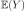

Note
Click here to download the full example code
Kriging : propagate uncertainties¶
import openturns as ot
import numpy as np
from matplotlib import pylab as plt
import openturns.viewer as otv
- In this example we propagate uncertainties through a kriging metamodel of the
We first build the metamodel and then compute its mean with a MonteCarlo computation.
We first load the Ishigami model from the usecases module :
from openturns.usecases import ishigami_function as ishigami_function
im = ishigami_function.IshigamiModel()
We build a design of experiments with a LHS for the three input variables supposed independent.
experiment = ot.LHSExperiment(im.distributionX, 30, False, True)
xdata = experiment.generate()
We get the exact model and evaluate it at the input training data xdata to build the output data ydata.
model = im.model
ydata = model(xdata)
We define our kriging strategy :
a constant basis in
;
a squared exponential covariance function.
dimension = 3
basis = ot.ConstantBasisFactory(dimension).build()
covarianceModel = ot.SquaredExponential([0.1]*dimension, [1.0])
algo = ot.KrigingAlgorithm(xdata, ydata, covarianceModel, basis)
algo.run()
result = algo.getResult()
We finally get the metamodel to use with MonteCarlo.
metamodel = result.getMetaModel()
We want to estmate the mean of the Ishigami model with MonteCarlo using the metamodel instead of the exact model.
We first create a random vector following the input distribution :
X = ot.RandomVector(im.distributionX)
And then we create a random vector from the image of the input random vector by the metamodel :
Y = ot.CompositeRandomVector(metamodel, X)
We now set our ExpectationSimulationAlgorithm object :
algo = ot.ExpectationSimulationAlgorithm(Y)
algo.setMaximumOuterSampling(50000)
algo.setBlockSize(1)
algo.setCoefficientOfVariationCriterionType('NONE')
We run it and store the result :
algo.run()
result = algo.getResult()
The expectation (  mean ) is obtained with :
expectation = result.getExpectationEstimate()
The mean estimate of the metamodel is
print("Mean of the Ishigami metamodel : %.3e" % expectation[0])
Out:
Mean of the Ishigami metamodel : 3.694e+00
We draw the convergence history.
graph = algo.drawExpectationConvergence()
view = otv.View(graph)
For reference, the exact mean of the Ishigami model is :
print("Mean of the Ishigami model : %.3e" % im.expectation)
plt.show()
Out:
Mean of the Ishigami model : 3.500e+00
Total running time of the script: ( 0 minutes 0.553 seconds)